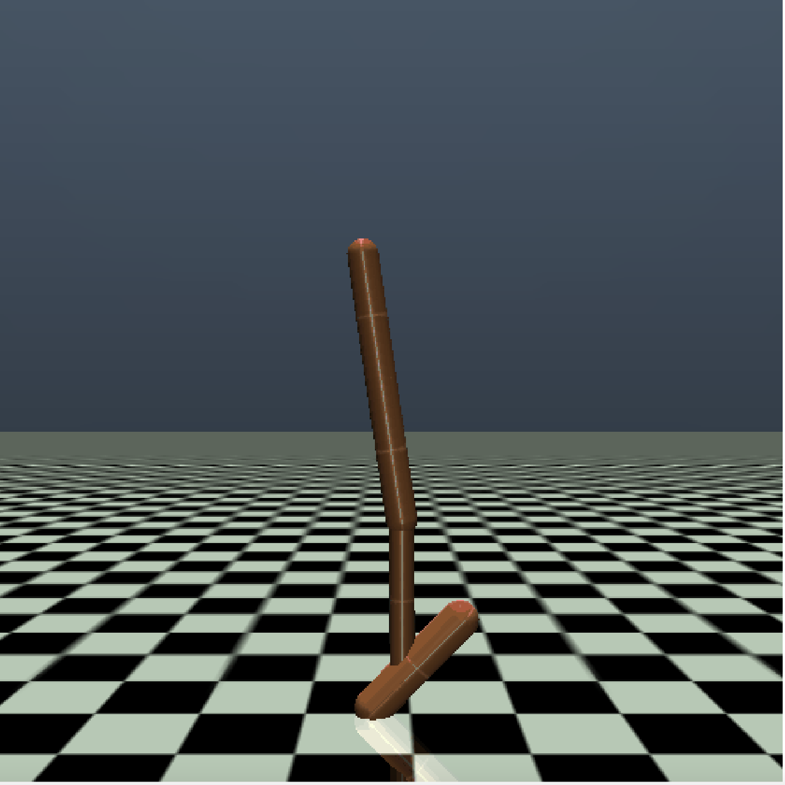
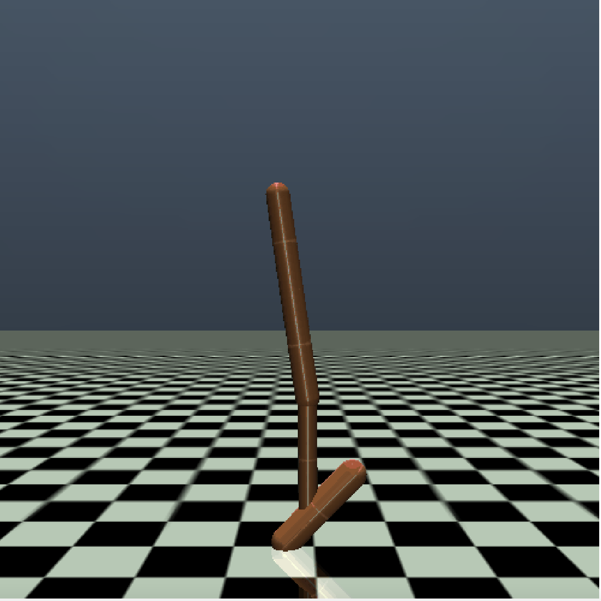

Benchmark Information#
d4rl:maze2d#

Datasets#
Environment Name |
Datasets |
Query-Count |
|---|---|---|
d4rl:maze2d-open-v0 |
1k, 10k, 100k, 1m |
1500 |
d4rl:maze2d-medium-v1 |
1k, 10k, 100k, 1m |
1500 |
d4rl:maze2d-umaze-v1 |
1k, 10k, 100k, 1m |
1500 |
d4rl:maze2d-large-v1 |
1k, 10k, 100k, 1m |
121 |
Pre-trained policy performance#
Environment Name |
pre_trained=1 (best) |
pre_trained=2 |
pre_trained=3 |
pre_trained=4 (worst) |
|---|---|---|---|---|
d4rl:maze2d-open-v0 |
122.2±10.61 |
104.9±22.19 |
18.05±14.85 |
4.85±8.62 |
d4rl:maze2d-medium-v1 |
245.55±272.75 |
203.75±252.61 |
256.65±260.16 |
258.55±262.81 |
d4rl:maze2d-umaze-v1 |
235.5±35.45 |
197.75±58.21 |
23.4±73.24 |
3.2±9.65 |
d4rl:maze2d-large-v1 |
231.35±268.37 |
160.8±201.97 |
50.65±76.94 |
9.95±9.95 |
mujoco(gym)#
 

Datasets#
Environment Name |
Datasets |
Query-Count |
|---|---|---|
HalfCheetah-v2 |
random, expert, medium, medium-replay, medium-expert |
1500 |
Hopper-v2 |
random, expert, medium, medium-replay, medium-expert |
1500 |
Walker2d-v2 |
random, expert, medium, medium-replay, medium-expert |
1500 |
Pre-trained policy performance#
Environment Name |
pre_trained=1 (best) |
pre_trained=2 |
pre_trained=3 |
pre_trained=4 (worst) |
|---|---|---|---|---|
HalfCheetah-v2 |
1169.13±80.45 |
1044.39±112.61 |
785.88±303.59 |
94.79±40.88 |
Hopper-v2 |
1995.84±794.71 |
1466.71±497.1 |
1832.43±560.86 |
236.51±1.09 |
Walker2d-v2 |
2506.9±689.45 |
811.28±321.66 |
387.01±42.82 |
162.7±102.14 |